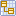
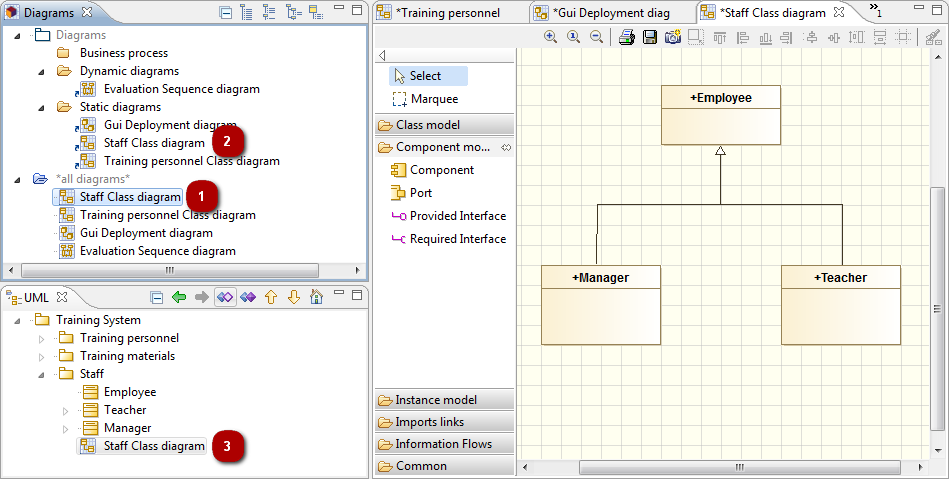

There are 3 ways of opening a diagram :
Double-click on its icon  in the “Model” view.
Double-click on its icon in the “Diagrams” view.
Double-click on its shortcut icon in a user folder in the “Diagrams” view.
Note: If the diagram is already open, its tab in the diagram edition view is brought to the foreground.
